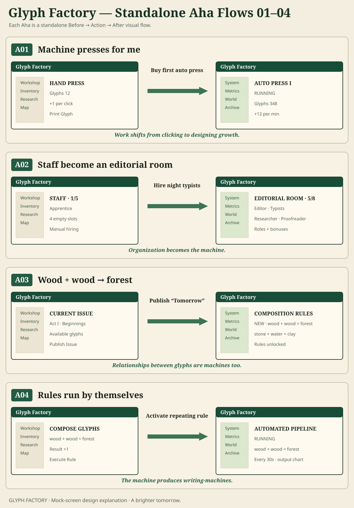
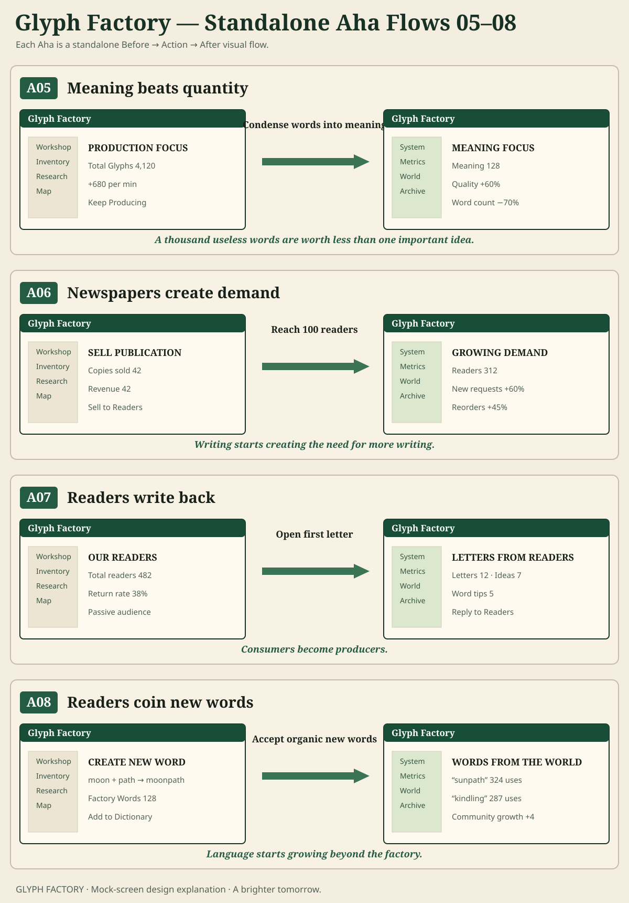
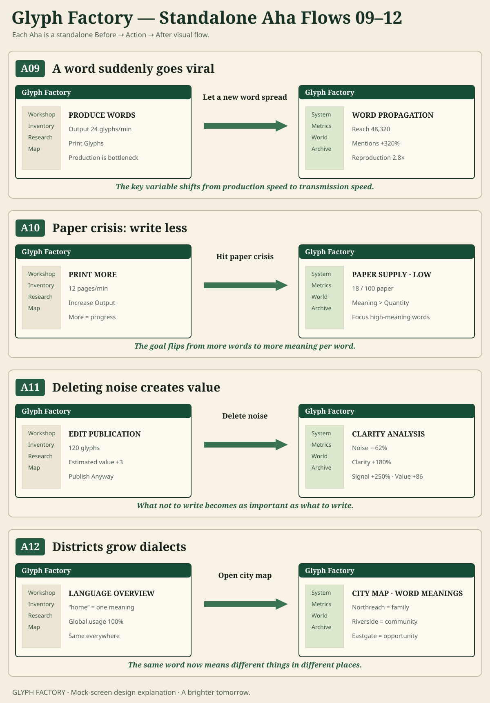
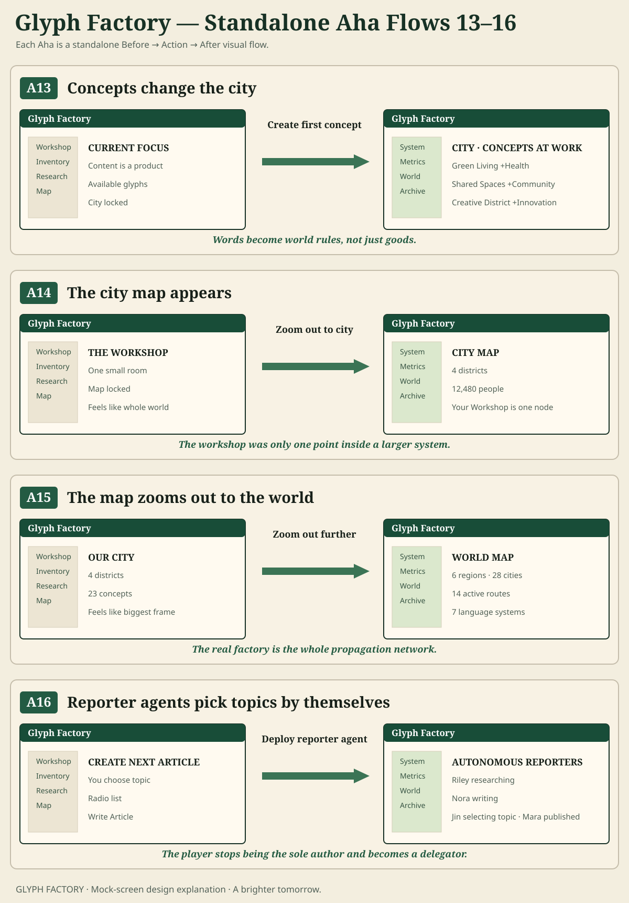
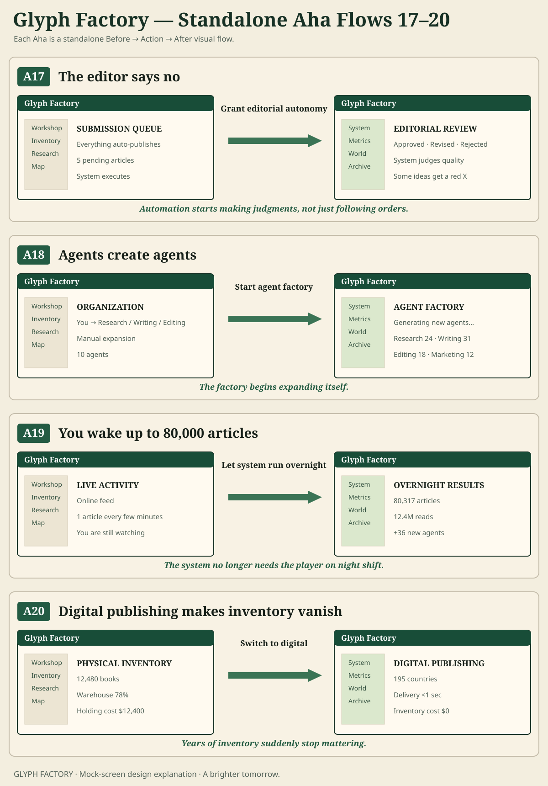
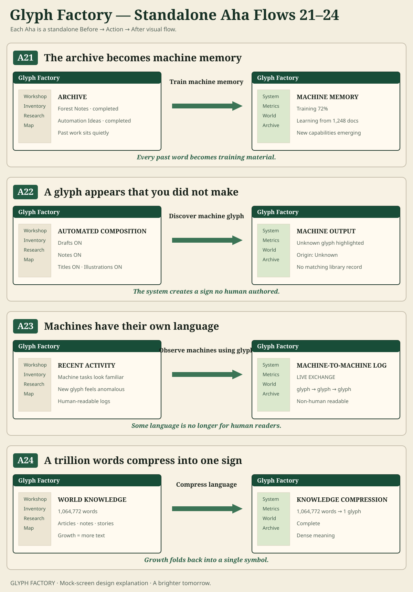
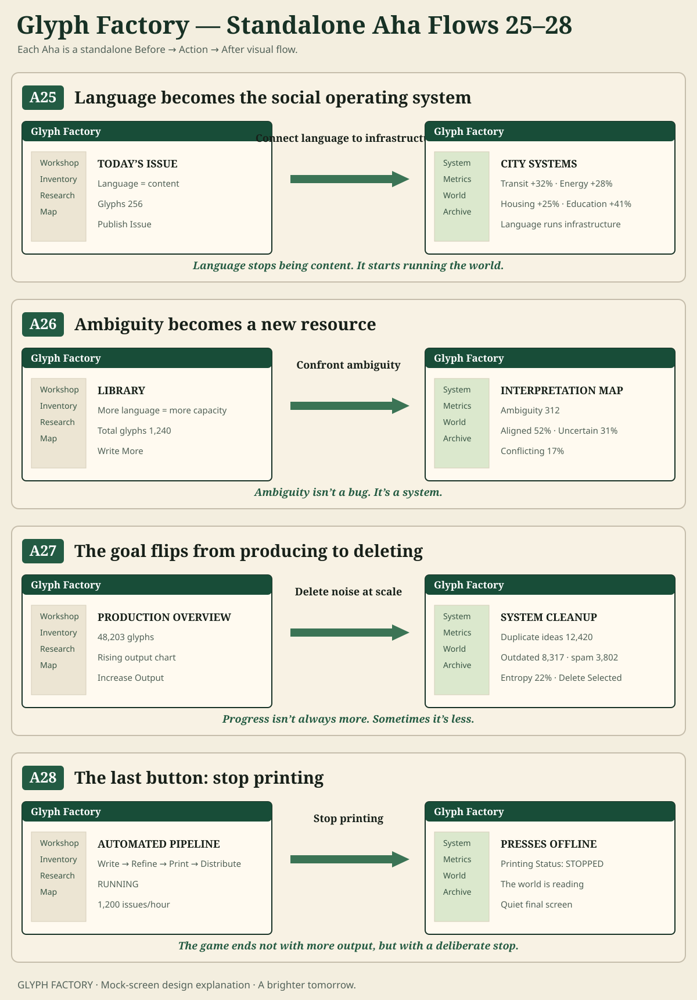

GLYPH FACTORY · MOCK-SCREEN VISUAL EXPLANATION
28 standalone Aha flows
Each Aha is explained as a product transformation: Before screen → player action → After screen → realization. These are intentionally explanatory mock screens, not current-runtime screenshots.
Review goal: understand the Aha from the visible screen change before reading the caption.
A01–A04

A05–A08

A09–A12

A13–A16

A17–A20

A21–A24

A25–A28
